프롬프트를 구할 사이트 네 곳
이 영상의 방법은 세 단계예요. 위 빨간 표시를 보면 원문 고르기, 붙여 넣기, 이름 바꾸기 순서예요. 맨 오른쪽 칸처럼 프롬프트에 있던 작품 이름 Drone Emprint를 내 브랜드 Copperdrum으로 바꾸는 게 손대는 일의 전부예요.
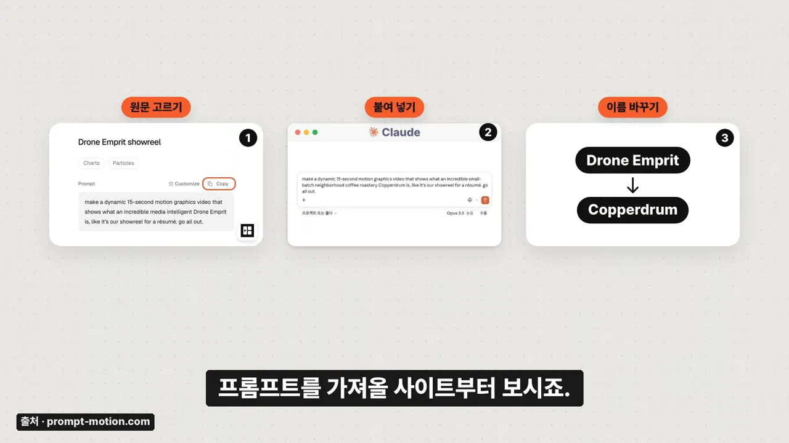
그래서 먼저 원문을 어디서 구할지 봐야 해요. 영상이 소개하는 곳은 네 곳이고, 쓰임새가 조금씩 달라요.
| 사이트 | 모아 둔 것 | 이 영상에서의 쓰임 |
|---|---|---|
| prompt-motion.com | Opus 5.5 모션 영상과 프롬프트 원문 | 대화창에 붙일 프롬프트 대부분 |
| remotion.dev/prompts | Remotion 팀이 모은 작품과 프롬프트 | 클로드 코드에서 쓸 로고 프롬프트 |
| skillry.dev | X에 올라온 Opus 5.5 영상 418개 | 프롬프트로 얼마나 비슷해지는지 비교 |
| revid.ai | 좋아요 순 클로드 모션 영상 64개 | 첨부할 참고 영상 고르기 |
Prompt Motion
첫 화면은 영상 카드가 격자로 깔린 갤러리예요. 항목을 열면 예시 영상과 프롬프트 전문, 복사 버튼, 어떤 모델로 만들었는지가 함께 나와요.
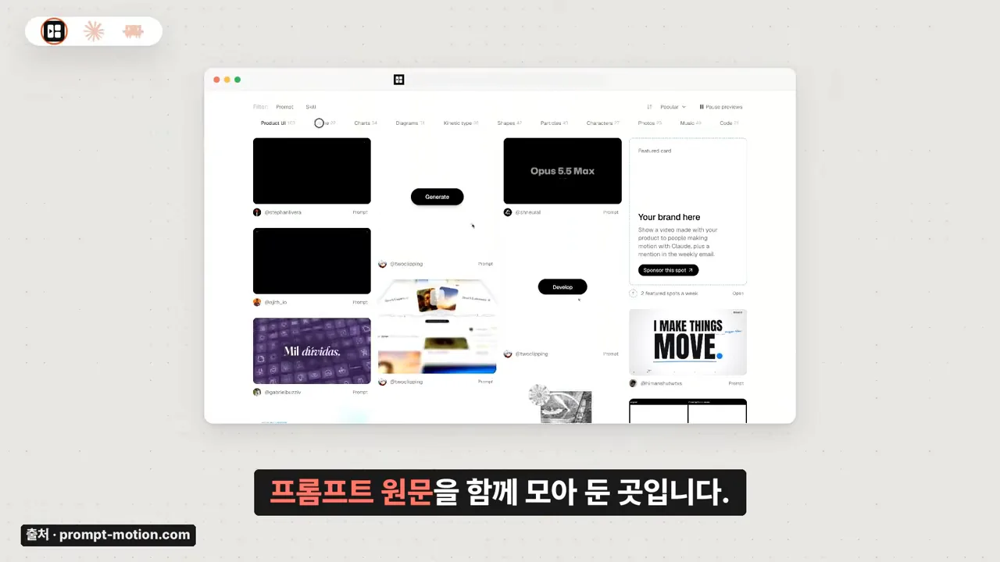
Customize도 눈여겨볼 만해요. 왼쪽 칸에 Brand, Palette, Length, Tempo를 넣으면 오른쪽 프롬프트의 주황색 부분이 그 값으로 바뀌어요. 화면 예시는 Alderwick을 넣은 12초 로고 영상 프롬프트예요.
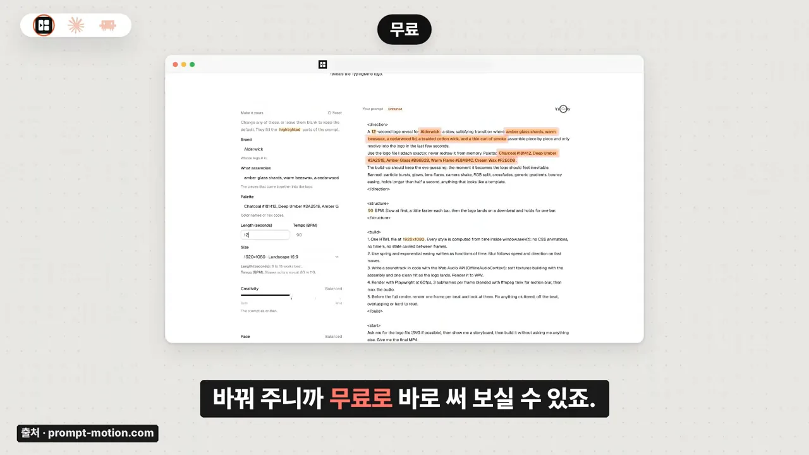
Remotion 쇼케이스
Remotion 팀이 직접 모은 곳이에요. 항목마다 Tool used, Model used, Prompt가 차례로 적혀 있어요. 화면의 항목은 Tool used가 Claude Code, Model used가 Opus 4.5로 표시돼 있어요. 코딩 에이전트로 만든 작품들이라 뒤에서 클로드 코드를 쓸 때 다시 와요.
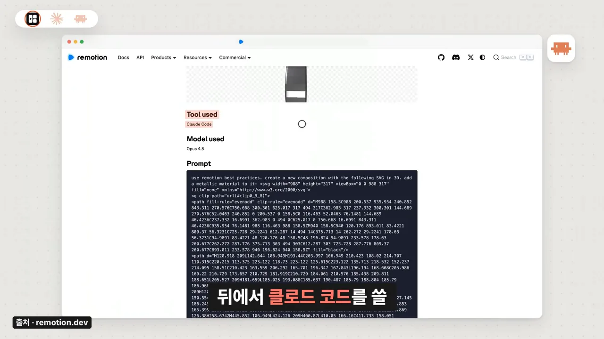
Skillry와 Revid
Skillry는 위쪽에 'Browse 418 Opus 5.5 videos'라고 적힌 영상 목록이에요. 영상은 계정 없이 무료로 보고 프롬프트까지 복사할 수 있다고 소개해요.
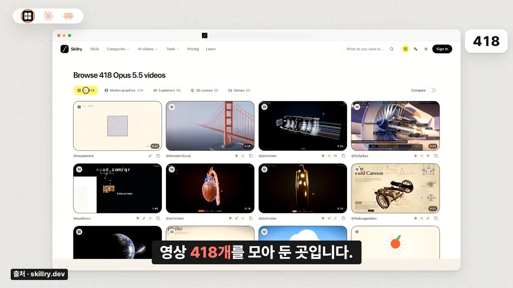
항목을 열면 원본과 다시 만든 영상이 나란히 나와요. 왼쪽 '원본'과 오른쪽 '다시 만든 영상'을 같이 틀면, 같은 프롬프트로 어디까지 비슷해지는지 바로 보여요.
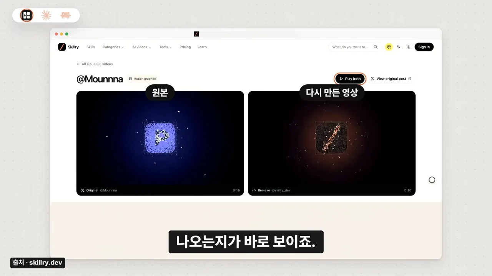
Revid는 제목부터 'Every video, ranked by likes'예요. 영상은 이곳을 프롬프트를 받는 곳이 아니라, 소리를 켜고 틀어 보며 마음에 드는 움직임을 고르는 곳으로 써요. 여기서 고른 영상을 뒤에서 대화창에 첨부해요.
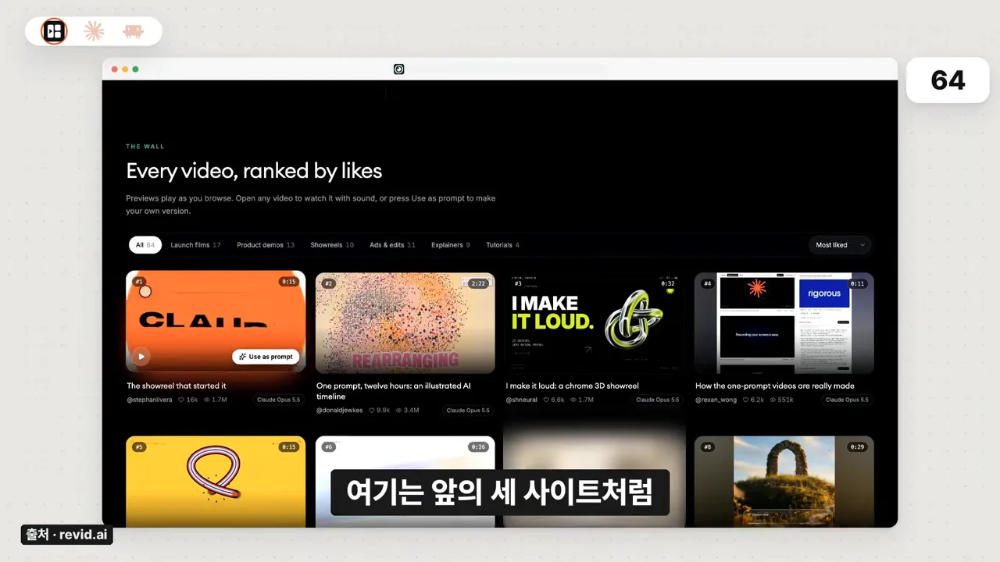
영상이 이 사이트들로 만드는 결과는 여섯 판이에요. 다음 표를 지도처럼 보면 뒤의 절이 따라가기 쉬워요.
| 판 | 쓴 프롬프트 | 바꾼 것 | 결과 |
|---|---|---|---|
| Copperdrum 1 | Prompt Motion 한 줄 쇼릴 | 이름 | 15초, 어두운 구릿빛 |
| Alderwick | 같은 프롬프트 | 이름 | 15초 16:9, 촛불과 세리프 글자 |
| Copperdrum 2 | Prompt Motion 레퍼런스 + 첨부 영상 | 이름, 길이 | 흰 바탕 제품 발표풍 |
| Aftermile | Prompt Motion 긴 프롬프트 | 입력 여섯 개 | 16초 120 BPM(Beats Per Minute), 박자에 맞춘 전환 |
| Walkhound | Prompt Motion 한 줄 홍보 | 이름, 기능 세 개 | 21.5초 9:16 세로 앱 광고 |
| Coldswell | Remotion 쇼케이스 SVG(Scalable Vector Graphics) 3D | 로고 SVG | 6초 크롬 로고, 투명 배경 파일 |
대화창과 클로드 코드, 어디에 붙일까요?
프롬프트를 붙이는 곳은 두 갈래예요. 왼쪽이 대화창, 오른쪽이 클로드 코드이고, 위에 달린 Revid 영상은 참고용으로 쓰는 재료예요.
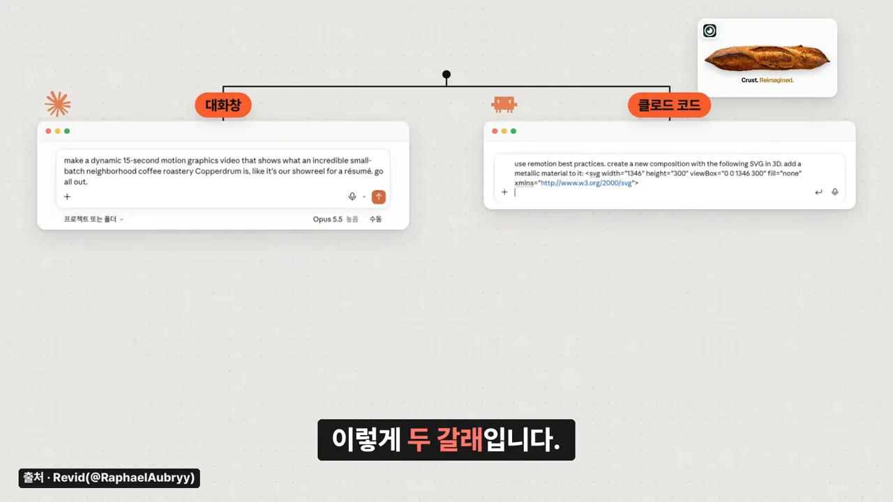
Anthropic도 10월 8일에 Claude Motion을 내놨어요. 화면의 공지 카드에 날짜가 2026년 10월 8일로 나와요. 코드로 그려서 MP4(MPEG-4 Part 14)로 내보낸다는 점은 이 영상의 방법과 같아요.
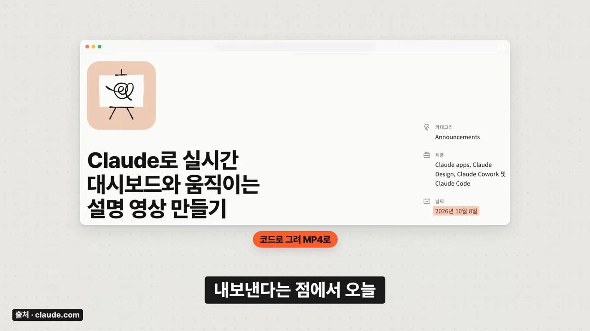
다만 지원 문서에는 Claude Motion이 팀과 기업 요금제의 베타라고 적혀 있어요. 빨간 강조 줄이 바로 그 문장이에요. 그래서 개인은 대화창과 클로드 코드로 하자는 게 영상의 얘기예요.
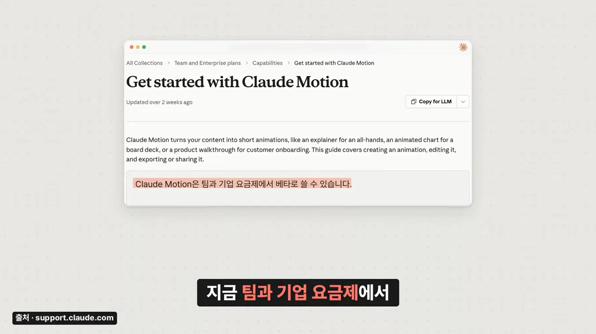
| 대화창 | 클로드 코드 | Claude Motion | |
|---|---|---|---|
| 설치 | 따로 없어요 | 스킬 설치 명령 하나 | 영상에서 다루지 않아요 |
| 결과물 | 대화창 플레이어에서 재생 | 영상과 작업 파일이 내 폴더에 남아요 | MP4로 내보내요 |
| 잘 맞는 일 | 짧은 로고 영상, 범퍼 | 편집기에 바로 얹을 파일 | 영상에서 다루지 않아요 |
| 요금제 | 개인도 바로 쓸 수 있어요 | 개인도 바로 쓸 수 있어요 | 팀, 기업 |
대화창 준비 세 가지
- 설정의 기능 메뉴에서 '클라우드에서 코드 실행'을 확인해요 — 클로드가 대화창 안에서 코드를 돌려 영상 파일까지 만들려면 켜져 있어야 해요.
- 새 대화를 열고 모델 선택기에서 Opus 5.5를 골라요
- 노력 단계를 높음 이상으로 올려요
아래 화면의 과녁 표시가 그 토글이에요. '코드 실행 및 파일 생성' 묶음 아래 '클라우드에서 코드 실행' 줄에 있고, 아래쪽 '코드 실행 → 영상 파일' 표시가 왜 필요한지 설명해 줘요.
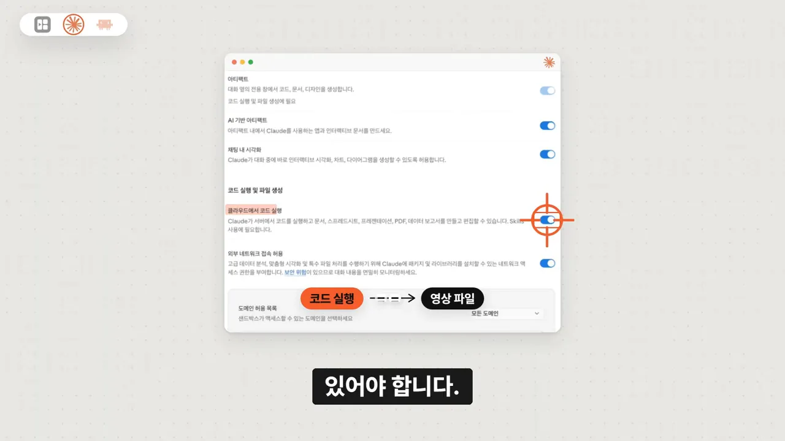
모델 선택기를 펼치면 오른쪽에 노력 단계 목록이 나와요. 빨간 줄로 표시한 칸이 높음이에요.
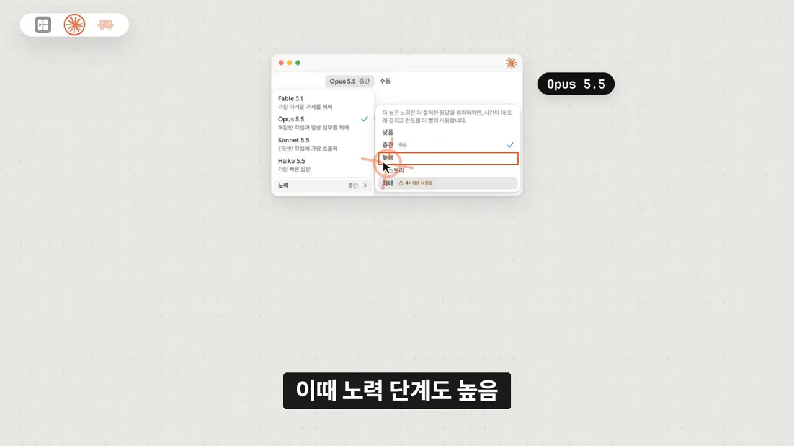
이름만 바꾸기, 그리고 참고 영상 첨부
같은 쇼릴, 다른 이름
처음 쓰는 프롬프트는 Prompt Motion의 'Drone Emprint showreel'이에요. 빨갛게 표시된 영어 문장 한 줄이 전부이고, 모델은 Opus 5.5로 적혀 있어요.
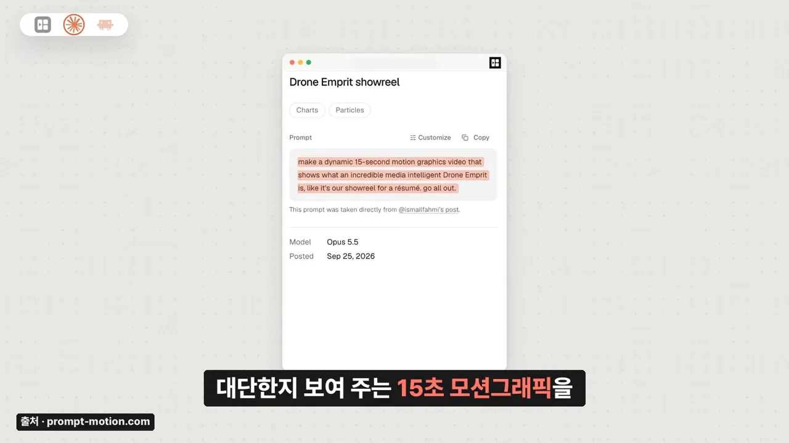
원문을 새 대화에 붙이고 Drone Emprint 자리만 Copperdrum으로 고쳐요. 아래 흰 박스가 그 문장의 뜻을 한국어로 옮긴 거예요. 번역을 보면 '소규모 동네 커피 로스터리'처럼 대상 설명도 함께 들어가요. 나머지 문장은 그대로 보냈다고 해요.
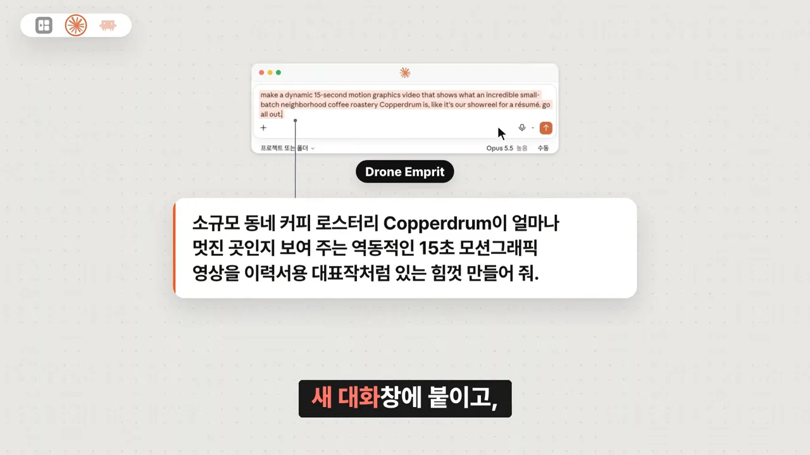
결과는 리벳 박힌 로스팅 드럼 안에서 생두가 도는 장면으로 시작해요. 왼쪽에 'ONE DRUM. SMALL BATCHES.'가 크게 뜨고, 드럼 하나로 조금씩 볶는다는 뜻이에요.
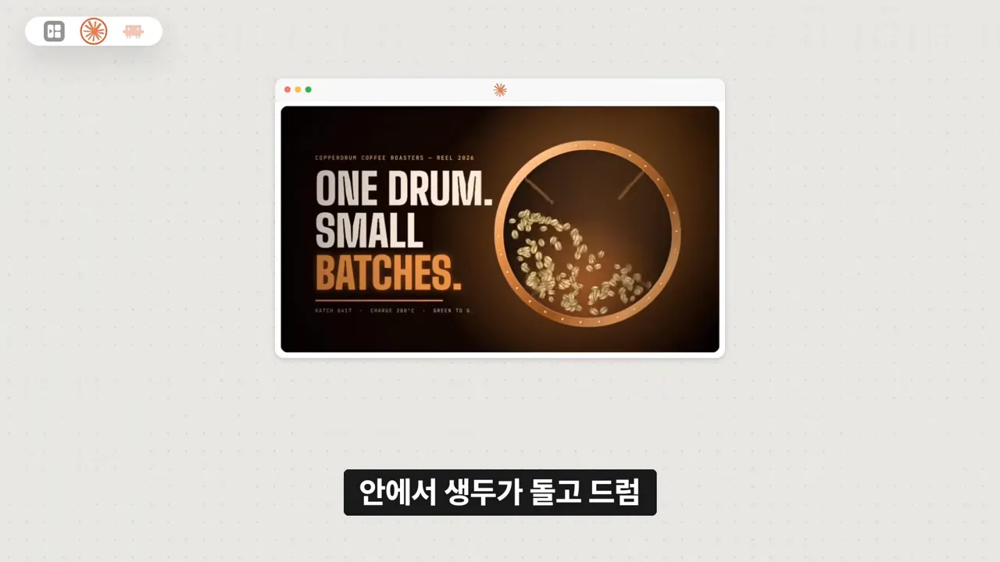
뒤이어 위에서 본 라테 아트가 나오고, 오른쪽에 'Brewed for the block, not the masses.'가 떠요. 이 동네를 위해 내렸다는 뜻이에요.
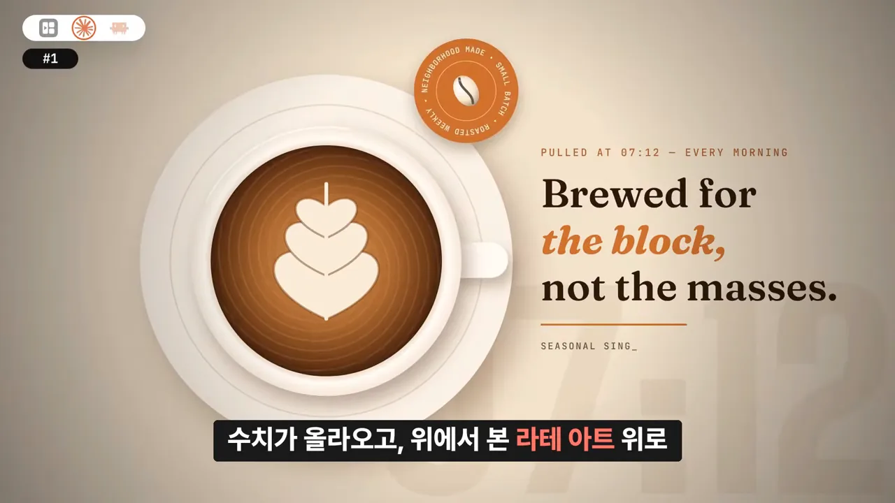
끝은 구리링 로고와 COPPERDRUM 글자예요. 화면 전체가 어두운 갈색과 구리빛으로 맞춰져 있는 게 보여요.
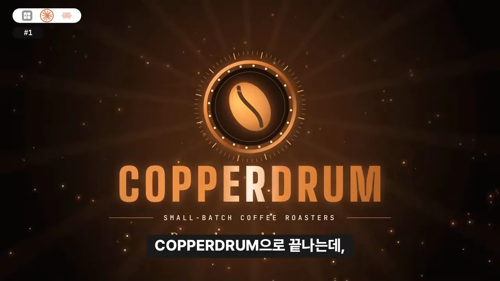
이번에는 같은 프롬프트에 직접 왁스를 부어 만드는 작은 향초 공방 Alderwick을 넣어요. 초 다섯 개가 차례로 켜지는 장면이 나오고, 위에 필기체 문구가 지나가요.
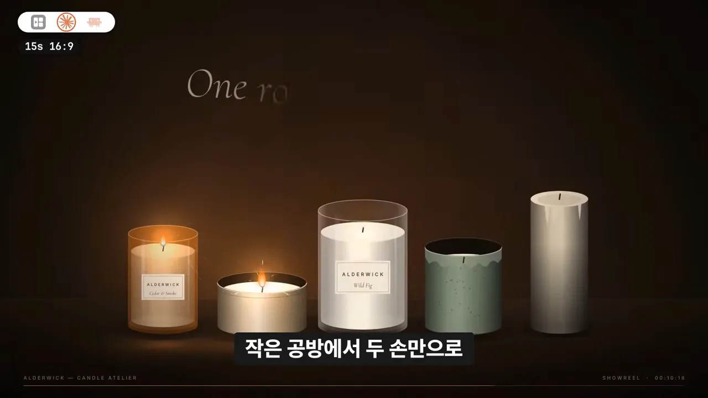
마지막은 불꽃을 두른 링과 세리프 글자 ALDERWICK이에요. 영상은 끝 카드까지 빛과 재질이 살아 있다고 짚어요.
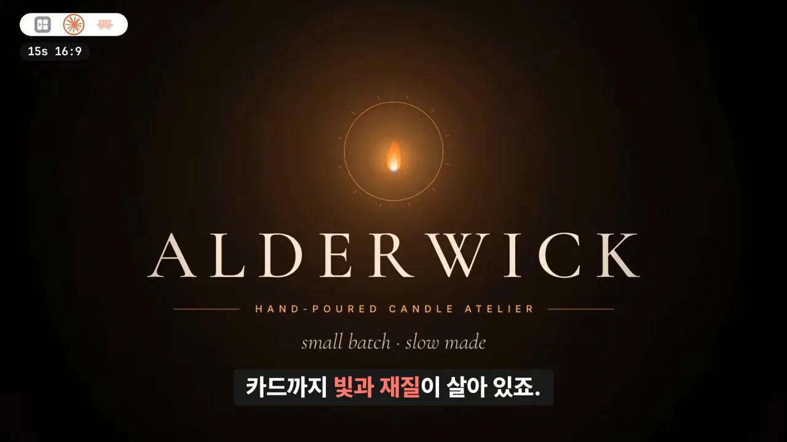
두 판을 나란히 놓으면 차이가 더 잘 보여요. 왼쪽 Copperdrum은 구리빛 면이 쌓이고, 오른쪽 Alderwick은 'Trimmed.'라는 필기체와 흰 양초가 나와요.
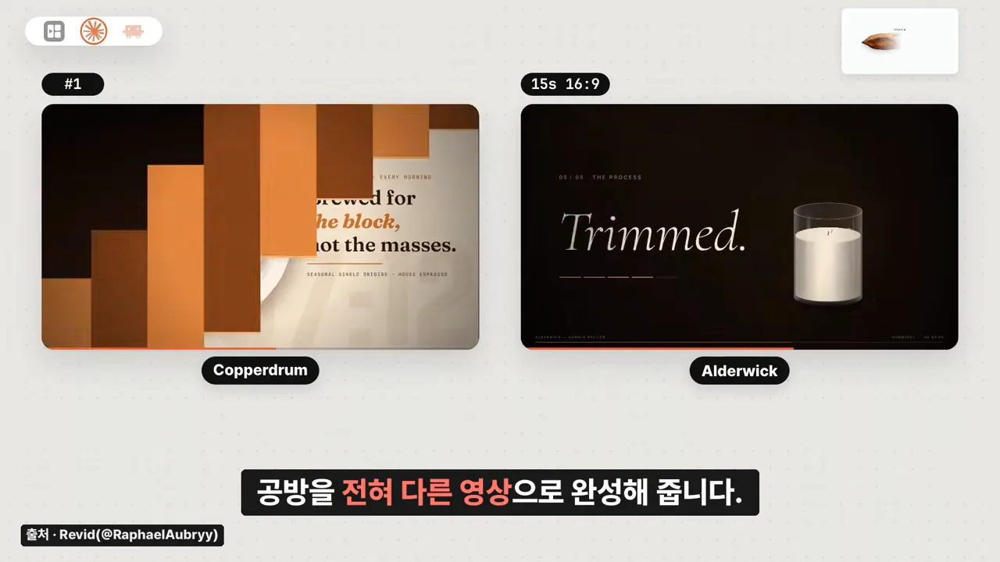
참고 영상을 같이 넣으면
다음은 Revid에서 고른 영상을 같이 넣는 판이에요. 흰 바탕에 빵을 소개하는 'Crust. Reimagined.' 영상을 맥으로 내려받아 대화창에 첨부해요. 오른쪽 창의 빨간 네모가 첨부한 파일이에요.
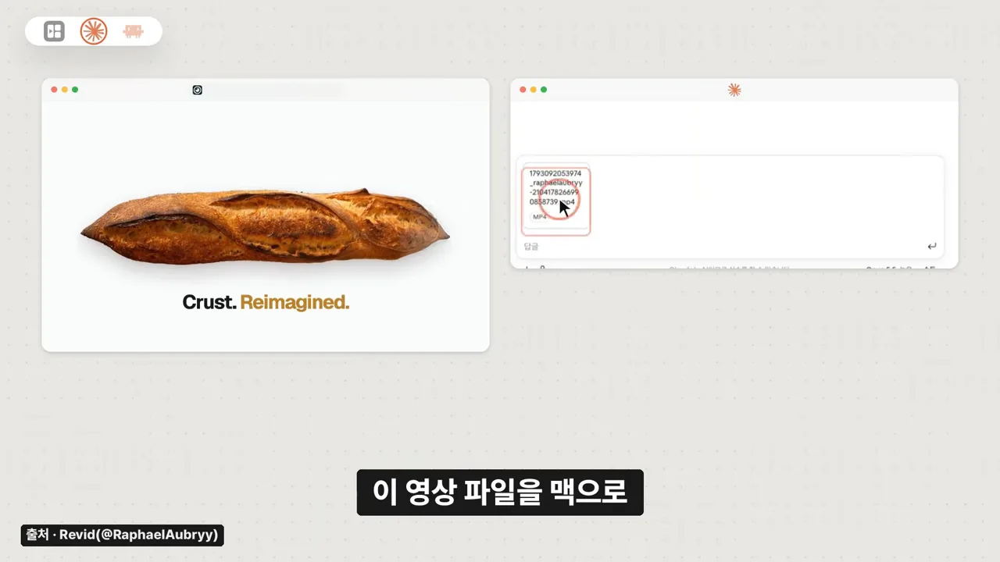
프롬프트는 Prompt Motion의 'Distilbook motion showreel'이에요. 첫 줄이 '첨부 영상을 참고해 같은 시각 스타일을 쓰라'는 지시예요. 여기서 Distilbook을 Copperdrum으로, 30초를 15초 정도로만 바꿔요.
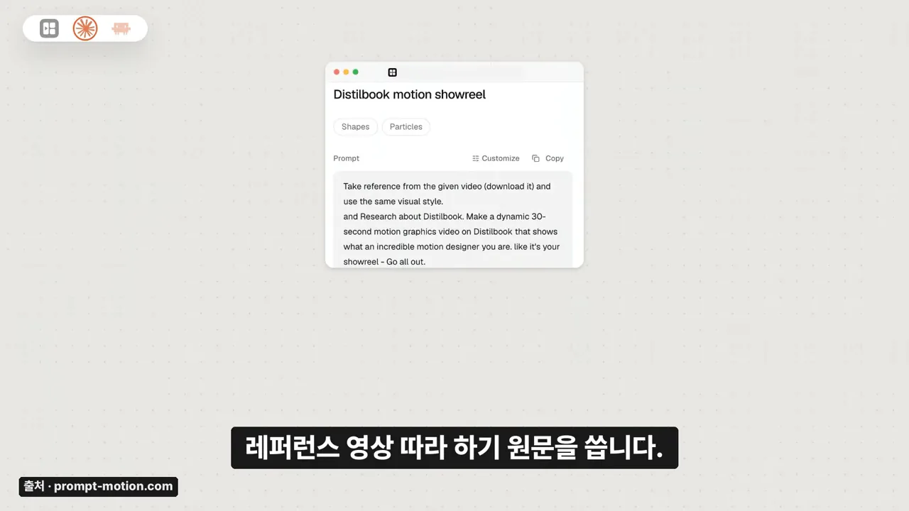
결과는 첫판과 완전히 달라요. 흰 바탕에 사진 같은 3D 원두가 뜨고 'Roast. Reimagined.'가 나와요. 빵 영상의 'Crust. Reimagined.'를 그대로 옮겨 온 구조예요. 영상은 이 장면을 꼭 애플 신제품 발표 같다고 말해요.
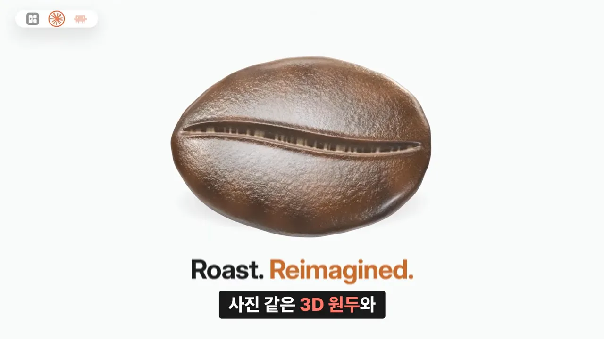
중간에는 'Up to 8 hours of focus.' 문구와 배터리 그림이 나와요. 제품 발표의 배터리 화면을 커피 가게 말로 바꿔 놓은 거예요.
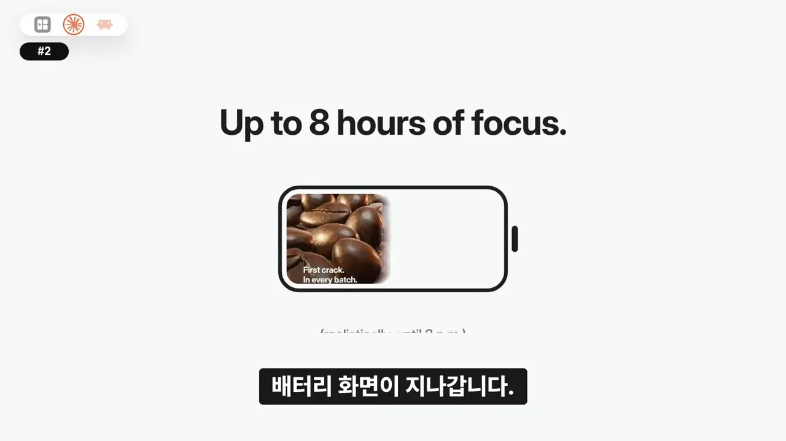
끝 카드에는 'From $4.50.'과 'Tomorrow, 7 a.m. At your corner.'가 들어가요. Copperdrum은 가상 브랜드라 이 숫자들도 실제 제품 정보가 아니에요.
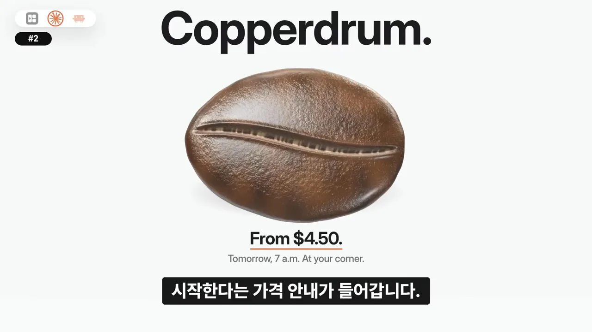
두 판을 나란히 보면 어두운 구릿빛 쇼릴이 밝은 제품 발표로 통째로 바뀌어 있어요. 같은 브랜드인데도요.
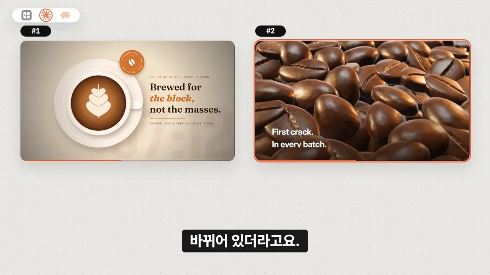
원하는 느낌을 말로 길게 설명하는 것보다 영상 하나를 첨부해 보여 주는 편이 빠르죠.
— 영상 05:27
입력을 더 주는 프롬프트 두 가지
먼저 물어보는 긴 프롬프트
Prompt Motion의 긴 프롬프트는 바로 만들지 않고 입력부터 물어보도록 짜여 있어요. 화면의 빨간 네모 안에 있는 여섯 줄이 Toggle label, Hero word, Graph percentage, Final card text, Accent color, Track이에요. 옆의 기본값을 보면 'defaults'로 답해도 된다는 안내도 보여요.
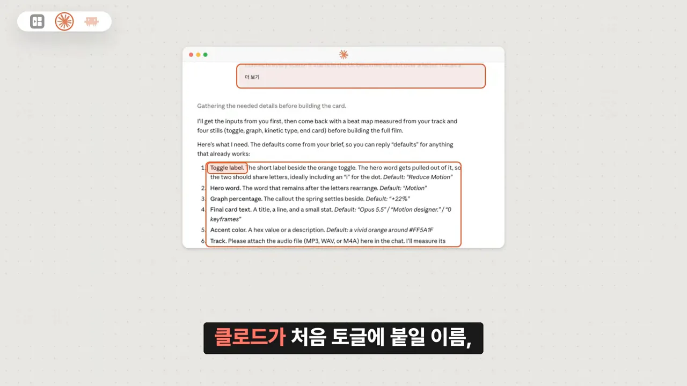
기준은 자정 넘어 도시를 달리는 가상의 밤 러닝크루 Aftermile이에요. 답은 아래 화면 그대로예요. 음악 파일이 없어서 6번에 'Web Audio API(Application Programming Interface)로 120 BPM 트랙을 코드로 만들어 달라'고 썼어요.
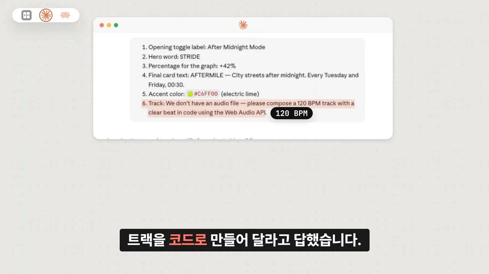
그러면 클로드가 바로 영상을 만들지 않아요. 120 BPM 16초 반복 박자표와 시험 장면을 먼저 보여 줘요. 오른쪽 작은 장면들이 토글, 그래프, AFTERMILE 끝 카드 같은 시험 장면이에요.
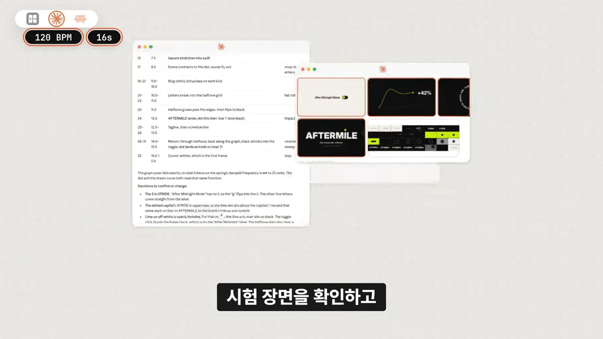
결과는 연두 점 하나가 토글에서 주인공 단어 'STRIDE', 스프링 그래프로 장면을 이어 가요. 그 뒤 원을 그리며 도는 글자, 하프톤 점, AFTERMILE 끝 카드를 지나 다시 처음 토글로 돌아와요. 글자가 흩어졌다 모이는 키네틱 타이포그래피 장면도 들어 있어요.
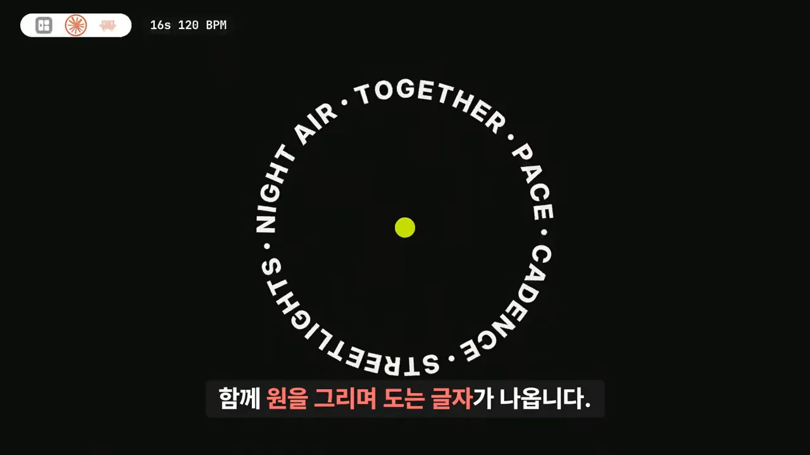
아래 화면의 파형이 코드로 만든 음악이에요. 위쪽 빨간 칸과 파형을 함께 보여 주면서, 글자와 장면이 바뀌는 순간이 박자에 맞아떨어진다고 짚어요.
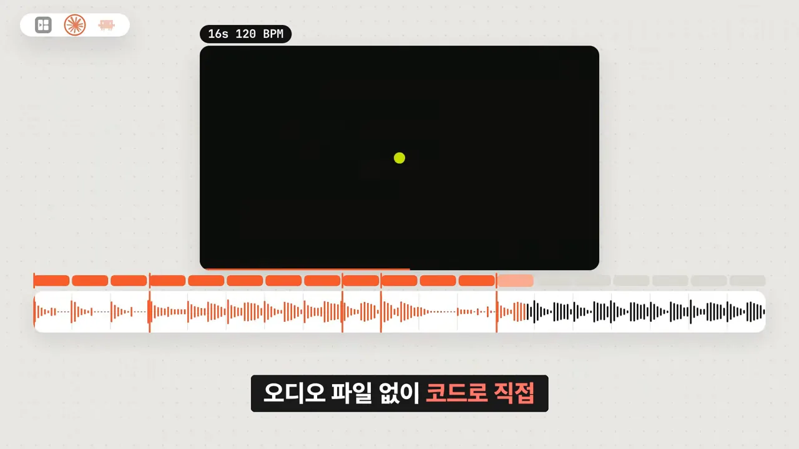
기능 세 개만 적는 한 줄 홍보
대화창 마지막 프롬프트는 Prompt Motion의 'Lightspark social promo video'예요. 서비스 기능을 알리는 짧고 세련된 SNS(Social Networking Service)용 영상을, 소리까지 넣어 실제 내보낼 수준으로 만들라는 뜻이에요. Iterations가 One-shot으로 적혀 있어요.
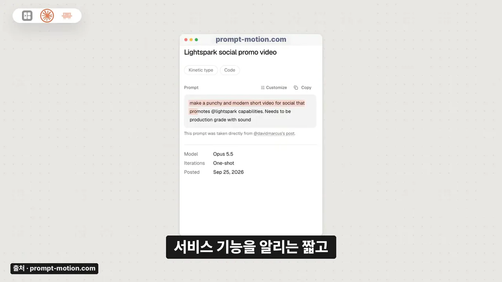
회사 이름 자리에 가상의 강아지 산책 앱 Walkhound를 넣고, 괄호에 기능 세 개를 적어요. 빨간 네모가 몇 번 탭으로 산책 도우미 예약, 실시간 산책 경로, 사진 업데이트예요.
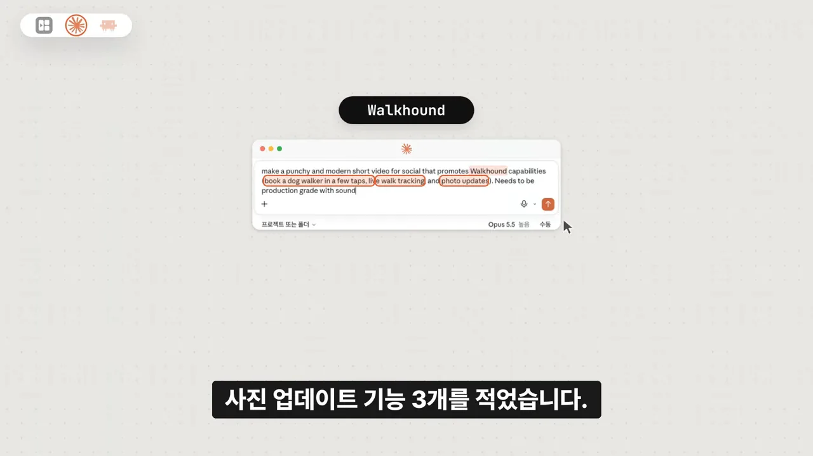
왼쪽 진행 상황을 보면 클로드가 'Walkhound dog walker app'을 웹에서 먼저 검색해요. 없는 브랜드라는 걸 확인하고 나면 오른쪽 'Assumptions to check before posting'에 적었듯 색과 로고, 앱 화면을 직접 지어요. 강아지 이름 Biscuit이나 평점 같은 화면 내용도 지어낸 값이라고 스스로 밝혀 줘요.
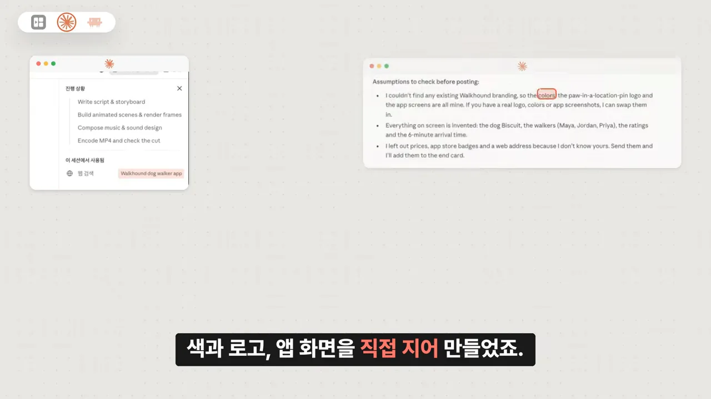
결과의 첫 장면은 'Book a walker in 3 taps.'와 실제 앱 같은 아이폰 화면이에요. 산책 도우미 카드에서 Maya를 고른 상태가 보여요.
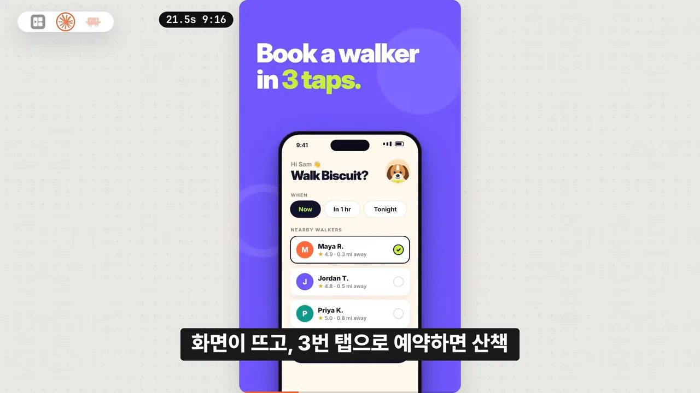
이어서 'Track every step. LIVE'와 지도 위 산책 경로가 나와요. 'Water break' 표시가 영상이 말한 물 마시는 시간이에요.
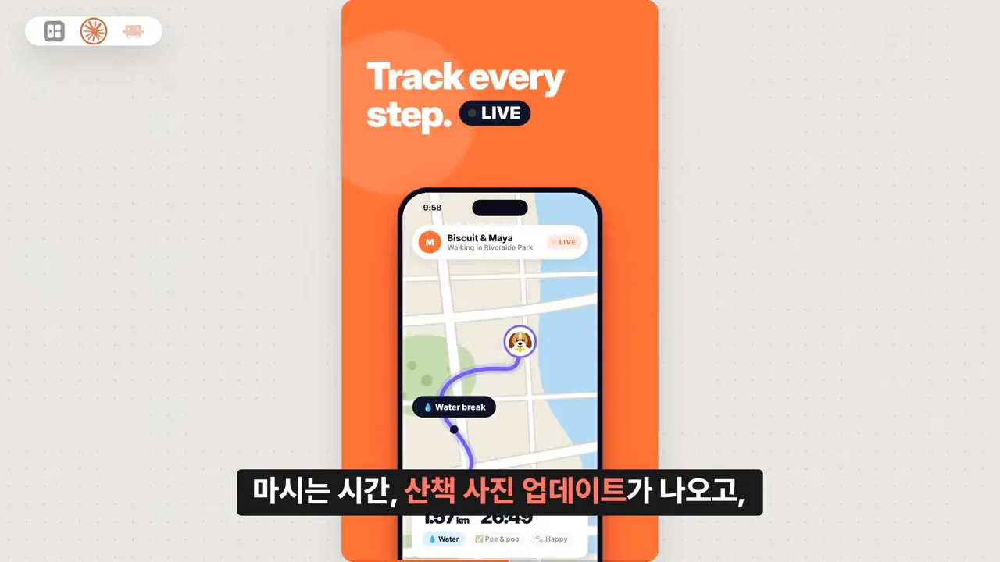
끝 화면은 walkhound 로고, 'Book. Track. Smile.', 'Get the app' 버튼이에요. 기능 세 개가 그대로 문구 세 단어가 됐어요.
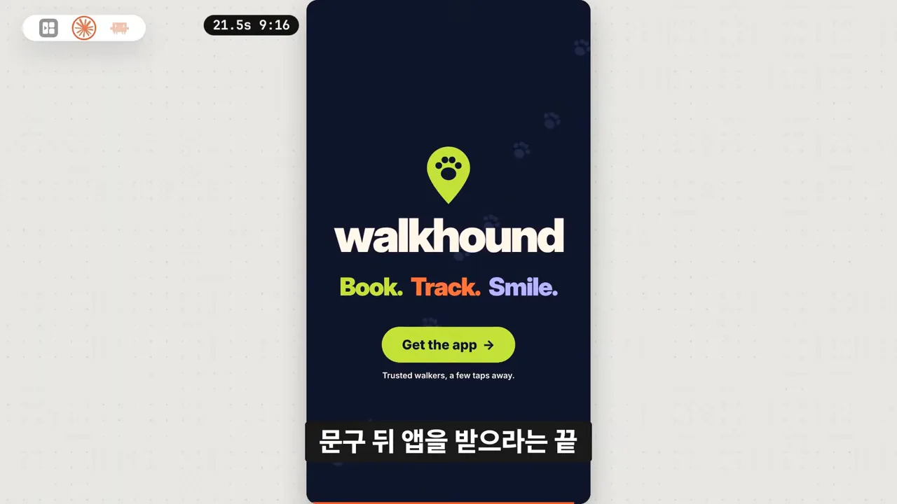
기능 세 개만 적어 넣었는데, 쇼츠나 릴스에 올릴 만한 세로 앱 광고 한 편이 나왔어요.
클로드 코드로 3D 로고를 영상에 얹기
마지막 판은 대화창에서 클로드 코드로 넘어가요. 만든 파일이 내 맥 폴더에 바로 남아야 편집기에 곧장 얹을 수 있기 때문이에요. 클로드 데스크톱 앱의 Code 탭을 열고 작업 폴더를 고른 뒤 에이전트 스킬인 Remotion 스킬을 깔아요.
npx skills add remotion-dev/skills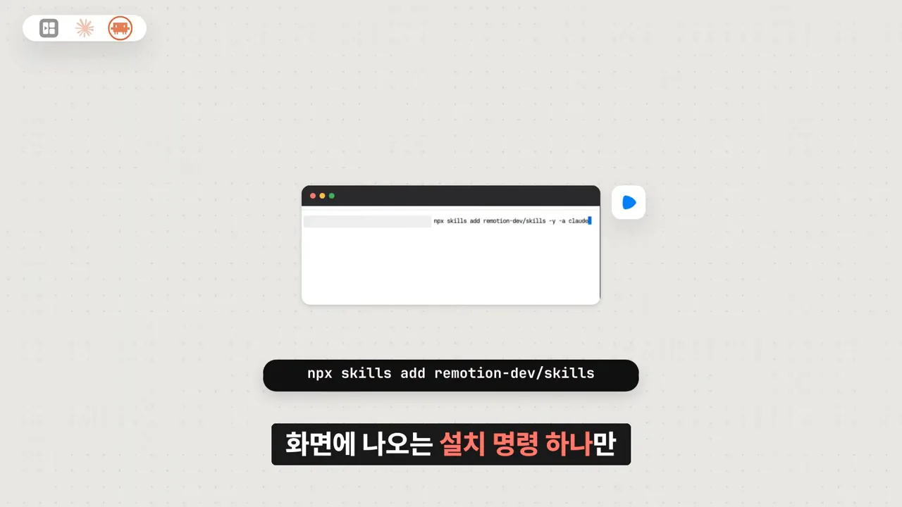
프롬프트는 Remotion 쇼케이스의 SVG 로고 3D 원문이에요. 뜻은 Remotion 모범 사례대로 이 SVG를 3D로 만들고 금속 재질을 입혀 달라는 거예요. 화면 회색 블록처럼 길게 이어지는 SVG 코드 부분에만 가상의 서핑숍 Coldswell 로고를 넣어 보내요.
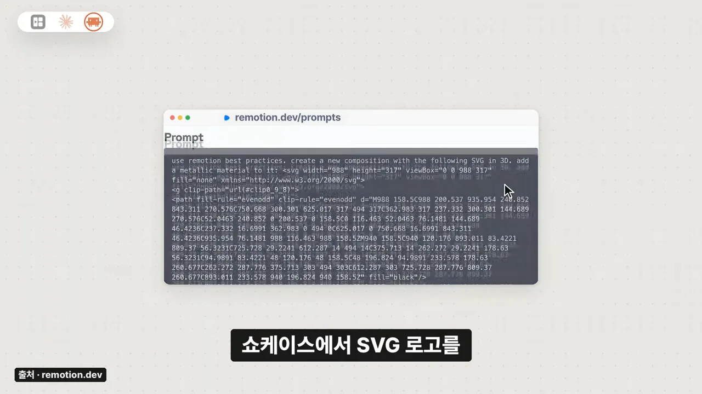
후속 프롬프트로 다듬기
첫 결과는 모서리를 깎은 크롬 로고에 스튜디오 조명이 비치고, 글자가 하나씩 뒤집히며 서는 6초 영상이에요. 쇼케이스 페이지에는 원작자가 이어서 보낸 말까지 그대로 있어요. 아래 화면의 일곱 줄이에요. 영상은 그중 뒤쪽 네 가지를 차례로 보낸 과정을 보여 줘요.
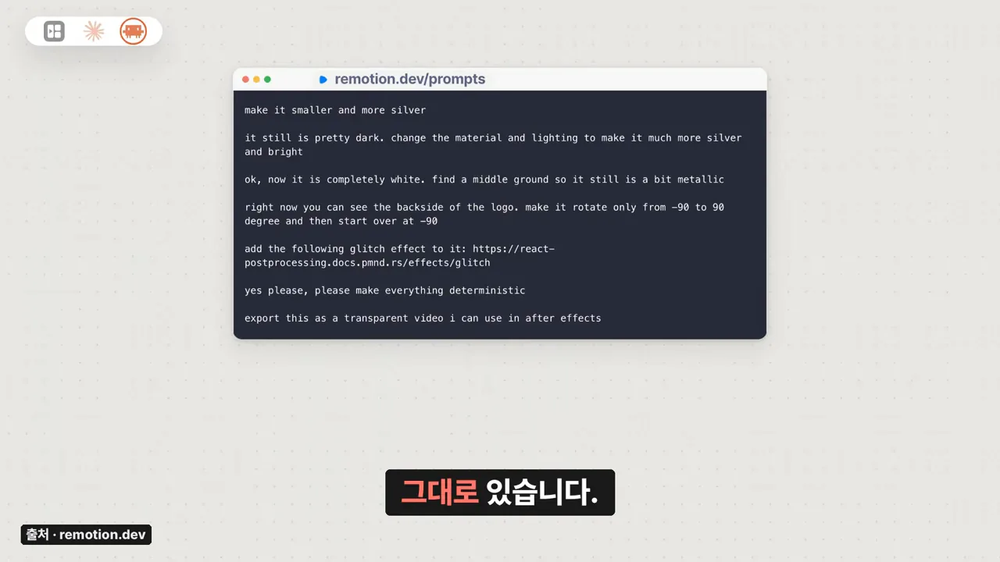
- 회전 범위를 제한해요 — 로고 뒷면이 보이니 -90도에서 90도까지만 돌고 처음부터 다시 돌게 해요.
- 글리치를 넣어요 — 효과 문서 링크 하나를 주니 돌아갈 때 RGB(Red Green Blue)로 갈라지는 효과가 들어가요. 중간에 빈 프레임이 생기는 문제도 클로드 코드가 찾아 고쳐요.
- 결정적 렌더로 고정해요 — 같은 렌더를 두 번 돌려 파일이 똑같은지 클로드 코드가 직접 비교해요.
- 투명 배경으로 뽑아요 — 바탕이 빈 ProRes 4444 파일이 내 맥 폴더에 생겨요.
아래 왼쪽은 클로드 코드 대화, 오른쪽은 그때의 Coldswell 결과예요. 위쪽 숫자 2가 지금 둘째 지시 차례라는 표시예요.
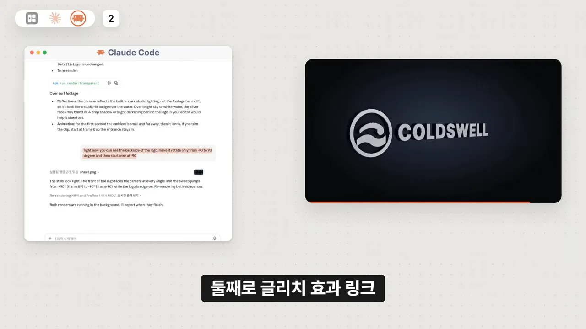
4번까지 끝내면 오른쪽처럼 체크무늬 위로 로고만 남아요. 체크무늬는 바탕이 비어 있다는 표시예요.
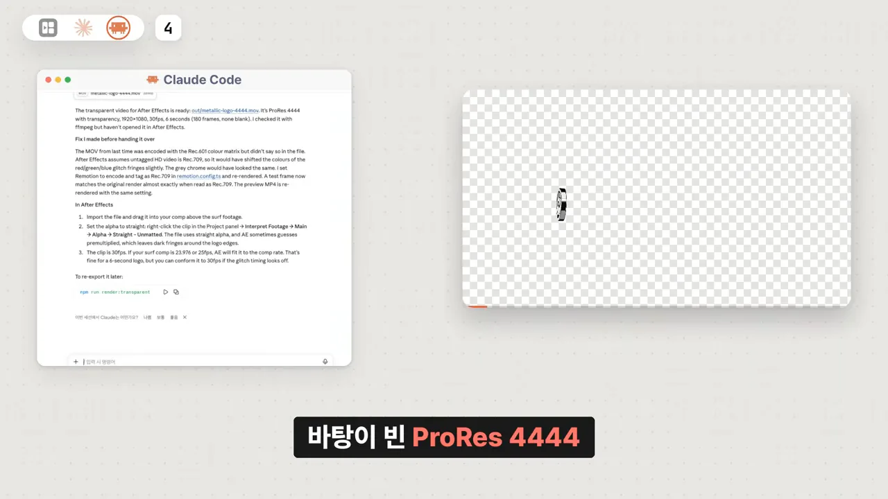
편집기에 얹어 보기
CapCut 타임라인 아래 트랙에 무료 서핑 영상을 깔고, 위 트랙에 투명 로고 파일을 올려 하늘 쪽 위 가운데에 둬요. 화면 아래쪽 타임라인에 두 줄이 겹쳐 있는 게 보여요.
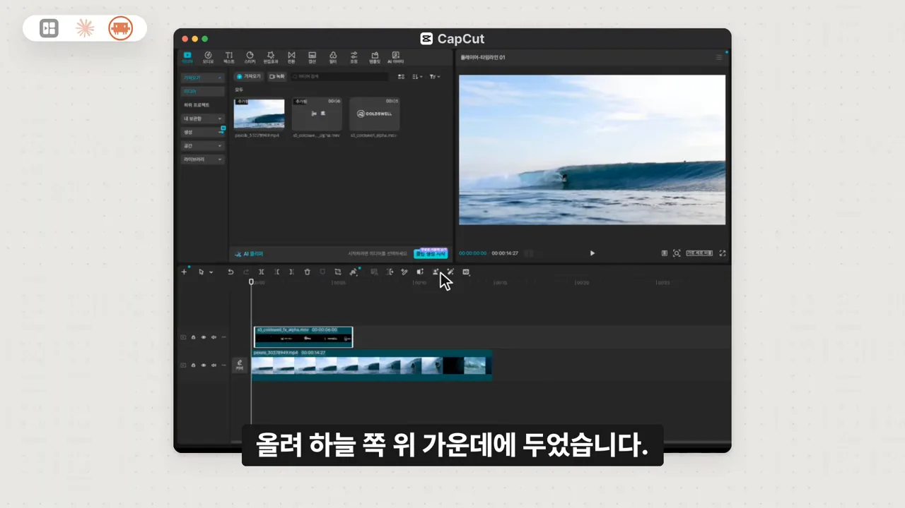
글리치 판과 첫 투명판을 둘 다 얹어 비교했어요. 왼쪽 글리치 판보다 오른쪽 첫 투명판의 글자가 실사 위에서 더 또렷하다는 게 영상의 결론이에요.
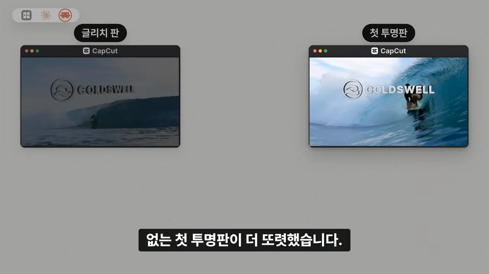
대화창에서 넘어온 이유가 이 화면에 그대로 있어요. metallic-logo-4444.mov 파일이 폴더에 생기고, 그 파일을 CapCut으로 가져오는 화살표예요.
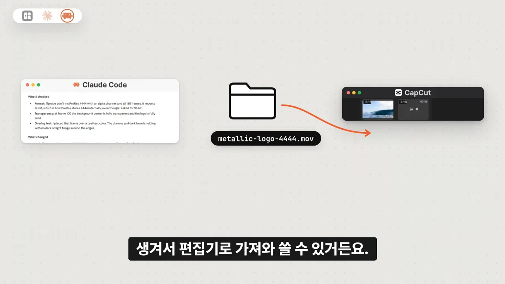
이 방법이 잘 맞는 쓰임
영상이 다시 정리하는 재료는 네 가지예요. 아래 화면 왼쪽부터 프롬프트 원문, 브랜드 이름 바꾸기, 잘 만든 영상 하나, 스킬 설치 명령 하나예요.
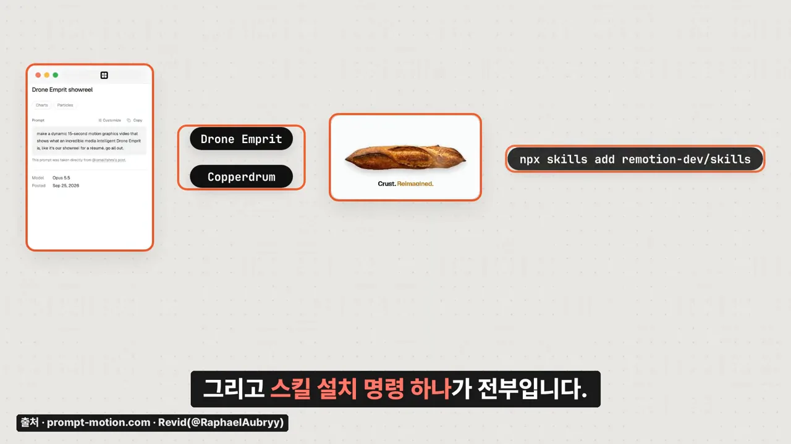
쓰임새로는 위쪽에 '로고 영상'을 강조한 Coldswell, AFTERMILE, 세로 앱 영상을 보여 줘요. 로고 모양과 색을 지켜야 하는 로고 영상, 영상 앞 범퍼, 소개 영상에 특히 잘 맞는다는 얘기예요.
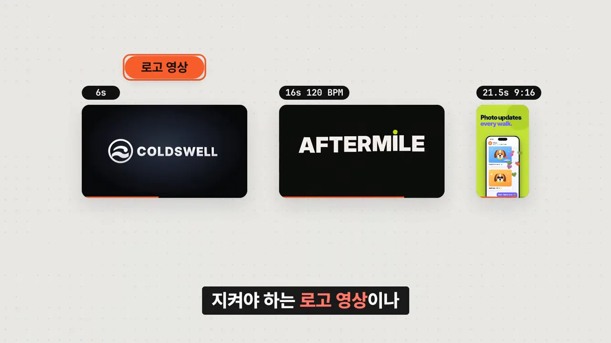
클로드가 글자와 색을 코드로 직접 그려서 처음 정한 모양이 영상에 그대로 남기 때문이거든요.
— 영상 09:47